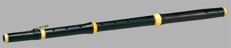
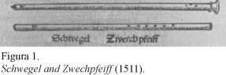
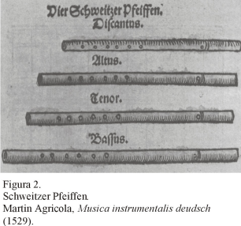
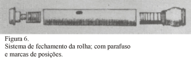

Flauta transversal
A flauta transversa, também chamada de flauta transversal, é um instrumento de sopro do grupo das madeiras que, conforme o próprio nome indica, é tocada em uma posição transversal.
Inicialmente era construída de madeira e possuía muitos orifícios e apenas uma chave. Ao longo dos anos, com o intuito de aumentar a quantidade de notas do instrumento e melhorar sua entoação, foram adicionadas mais chaves.
Flauta transversa barroca-construída por António Jóse Haupt (1796)
Hoje a flauta transversa é totalmente construída em metal e constituída de muitas chaves, como se pode ver na ilustração no alto desta página É um instrumento integrante da orquestra e também é muito comum nos grupos de choro.
A flauta é um dos mais antigos instrumentos. Desde os tempos mais remotos, encontramos relatos sobre homens que se utilizavam de ossos e outros objetos com formato de tubo para produzir sons. Na era paleolítica, tais fatos tinham ligações com o simbolismo das culturas e os fenomenos sonoros ligados à esses objetos tinham um significado místico. Como os tambores, a flauta foi inventada para servir a rituais de magia. Era usada por curandeiros das tribos como um instrumento de auxílio em suas comunicações com o mundo dos espíritos, para curar doenças, cessar a chuva e assim por diante.
Em seus estágios iniciais, a flauta tinha várias formas, desde um pequeno apito feito a partir de osso de avestruz, passando pelo tubo de bambu com um corte em forma de forquilha (que mais tarde se transformaria na flauta doce) e ainda algumas fabricadas a partir de cascas de frutas que, após secas, deixavam uma cavidade ôca em seu interior.
Com o passar do tempo, orifícios foram sendo adicionados às flautas e suas outras formas. As civilizações Egípcias e Sumérias já entraram na história fazendo uso de instrumentos com três ou quatro orifícios. No entanto, desde a era pré-histórica já se sabia de flautas fabricadas com ossos e contendo vários orifícios perfurados.
A flauta, portanto, herdou estas características mágicas. Em solos orquestrais como L'Après-midi d'un Faune (Debussy) e Daphnis and Chloë (Ravel), não é difícil identificar o deus Pan, recostado à uma árvore, flauteando seus encantos e inspirando a floresta com seu som mágico.
Idade Média
Podemos considerar que a flauta teve duas fases distintas: a fase “alemã”, ou do sistema antigo, e a fase da flauta moderna, a partir de Theobald Boehm. Na Renascença e mesmo antes, havia diversos instrumentos que eram chamados de flautas. Alguns que eram tocados verticalmente tornaram-se a moderna flauta doce, enquanto que os que eram tocados de lado transformaram-se na flauta transversal. Eram, no entanto, construídos em tubos únicos de madeira e continham orifícios que eram fechados com os dedos para produzir diferentes notas.
Enquanto que antes de 1400 os instrumentistas somente acompanhavam os cantores, participando em composições vocais como pequenas canções e, mais tarde, em madrigais e motetes, a partir da Renascença tornaram-se emancipados da música vocal e tiveram suas próprias formas de música instrumental. Ainda assim, a concepção dos instrumentos seguia os mesmos moldes da música vocal, ou seja, cada tipo de instrumento era feito em diversos tamanhos, basicamente correspondendo às partes de um conjunto vocal. Martin Agricola mostrou quatro diferentes tipos de flautas, chamadas “Schweitzer Pfeiffen”, em sua obra Musica Instrumentalis deudsch, publicada em 1529, que eram utilizados principalmente com instrumentos de percussão como caixas e com finalidades militares ou marciais.
Com a chegada da segunda metade do século XVI houve um aumento significativo no interesse pelo timbre como uma entidade musical independente, o que, por sua vez, estimulou ainda mais o conceito de construção dos instrumentos. Com a criação da música instrumental, as qualidades tonais dos diferentes tipos de instrumentos e considerações como coloração do som em conjunto com a linha melódica, harmonia e contraponto, tornaram-se exigências. A instrumentação tornou-se uma parte importante da composição e houve o surgimento da orquestra.
O primeiro compositor a reconhecer a família de flautas transversais como instrumento de suficiente valor musical, diferentemente da sua função militar, foi Michael Praetorius, em sua obra Syntagma Musicum, de 1619-20 (Figura 3). A figura mostra três tamanhos diferentes de flautas, chamadas Querflötten ou Querpfeiffen (Discante: A1-A3; Alto ou Tenor: D1-D3; Baixo: G1 G2), cada uma delas com uma tessitura natural de duas oitavas e meia, mais quatro notas, chamadas de “falsete”, que somente eram obtidas por instrumentistas habilidosos. Estes instrumentos foram os precursores da chamada “flauta alemã” do século XVII ao século XIX. A flauta Alto ou Tenor era afinada em D, uma característica de todas as flautas antes de Boehm; e a Baixo foi a primeira flauta a ser dividida em duas partes para se ajustar a afinação.
Com a evolução do período Barroco, enfatizando a música instrumental em substituição à música dramática representada pelo madrigal lírico, houve a necessidade de melhorias e avanços nos instrumentos de madeira. As inflexões e contrastes requeridos pelo novo estilo, principalmente com uma tessitura mais ampla e um contraste dinâmico mais distinto, exigiram uma maior flexibilidade dos instrumentos para expressar esse estilo em sua totalidade.
Claramente a flauta doce (recorder) não servia mais para essas funções e a flauta transversal tomou seu lugar, face à sua sonoridade mais brilhante e às maiores possibilidades de sua tessitura.
No entanto, ainda havia muito o que ser modificado até que a flauta transversal alcançasse tais exigências de expressividade.
O principal personagem que efetuou modificações significativas na flauta foi o francês 4 Jean Hotteterre (ca. 1648 ca. 1732). Hotteterre foi responsável pela adição da primeira chave na flauta, por volta de 1660. A primeira publicação para a nova flauta deu-se somente em 1707, quando Jacques Martin Hotteterre “le Romain”, publicou seu Principes de la Flûte Traversière, ou Flûte d'Allemagne.
Como imaginado por Mersenne, o instrumento construído por Hotteterre era afinado na escala de Ré Maior, com o D 1 como nota fundamental. A flauta era dividida em três partes, sendo a parte central com seis orifícios e o “pé” do instrumento contendo a inovadora chave do D#
A típica flauta do século XVIII era fechada em sua extremidade superior por meio de um sistema de rolha. Este sistema possibilitava ao instrumentista puxar ou empurrar a rolha para afinar o instrumento e, para tal fim, contava com um parafuso anexado à ela. A parte exposta desse parafuso (a parte que ficava para fora do instrumento) era normalmente marcada com anéis numerados, uma vez que, mesmo durante a execução de uma sonata ou concerto, o instrumentista era instruído a efetuar ajustes na posição da rolha para afinar a flauta. Entretanto, somente este tipo de ajuste não era suficiente para compensar os problemas de afinação provocados por modulações para algumas tonalidades muito distantes dos padrões do instrumento.
